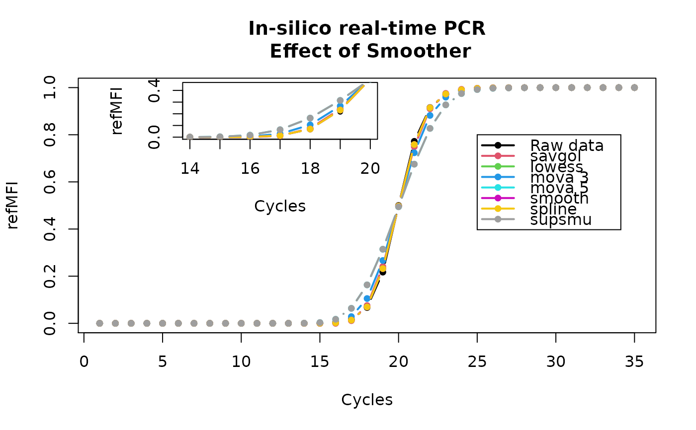
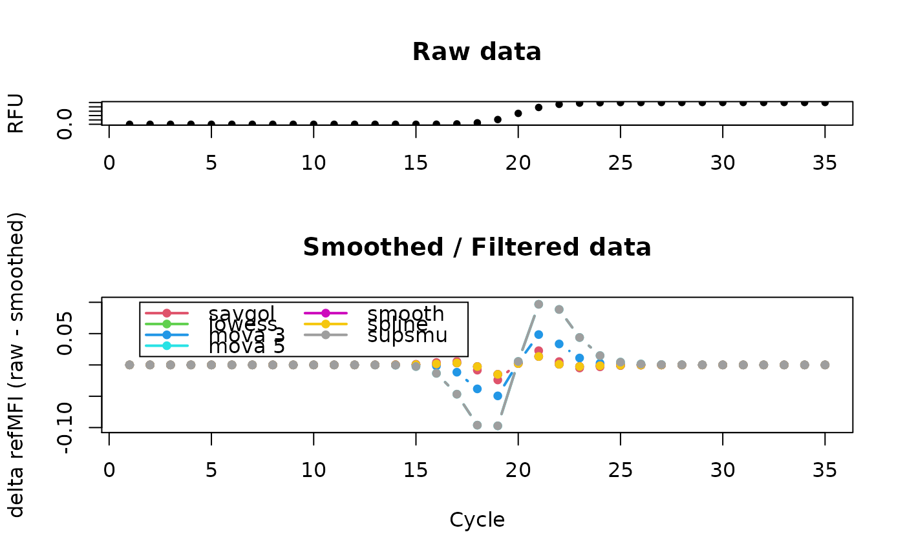

smoother.RdSmoother is a wrapper for several smoothing functions including LOWESS, Moving Average, Friedman's SuperSmoother, Cubic Spline and Savitzky-Golay smoothing filter, Friedman's SuperSmoother, and Whittaker smoother for amplification curve data.
# S4 method for numeric,numeric smoother(x, y, trans = FALSE, bg.outliers = FALSE, method = "savgol", CPP = TRUE, paralell = NULL) # S4 method for matrix,missing smoother(x, y, trans = FALSE, bg.outliers = FALSE, method = "savgol", CPP = TRUE, paralell = NULL) # S4 method for data.frame,missing smoother(x, y, trans = FALSE, bg.outliers = FALSE, method = "savgol", CPP = TRUE, paralell = NULL)
| x |
|
|---|---|
| y |
|
| trans | perform a linear transformation based on the trend of the background range. |
| bg.outliers | logical parameter which indicates of outliers should be removed from background range. |
| method | a list where each element is character vector representing a smoothing method or a named list of additional arguments to a smoothing algorithm. See Examples section. The Savitzky-Golay smoothing filter is the default smoother. Use "lowess" for LOWESS smoother (locally-weighted polynomial regression, "mova" for moving average, "savgol" for Savitzky-Golay smoothing filter, "smooth" for cubic spline smooth, "spline" for standard cubic spline smooth, "supsmu" for Friedman's SuperSmoother, "whit1" for weighted Whittaker smoothing with a first order finite difference penalty, "whit2" for weighted Whittaker smoothing with a second order finite difference penalty or "all" for all implemented smoothing algorithms. Both upper and lower case names are accepted. |
| CPP | logical parameter which indicates if CPP (curve pre-processor) should be used. |
| paralell | should contain a cluster object, created by package |
Amplification curve data of experimental thermo-cyclers may deliver results
which are hard to interpret due to noise and scatter. For data presentation
it is often useful to smooth or filter the data prior to presentation.
Smoothing and filtering are different approaches with a similar outcome to
preprocess an input signal in order to make it available for an analysis
step. Filtering uses methods of signal processing. They take a data input
and apply a function to form an output. There are linear and non-linear
filters. The most common example of a linear filter is the the moving
average. A moving average filter replaces sequentially data points with the
average of the neighbor data points. The average is calculated from a
defined span ("window") of odd count (e.g., 3, 5). The average herein may
also refer to the median, the geometric or exponential mean. Smoothing in
contrast uses statistical approaches. Such approaches use for example local
regression models (e.g., least squares estimate) or cubic splines. Splines apply
non-parametric regression by local cubic polynomials between knot points. Other
examples for smoothers include Savitzky-Golay smoothing filter, Friedman's
SuperSmoother, and Whittaker smoother. Several methods were integrated in the
chipPCR package. A careful evaluation of this preprocessing step is of
high importance (Spiess et al. 2014).
smoother is a wrapper for smoother
functions and filters commonly used to process amplification curve data.
The smoother function was enhanced by functionality
of the fixNA and CPP
functions. The parameter "lowess" for LOWESS smoother (locally-weighted
polynomial regression) can be tuned by the parameters f and
iter (see lowess for details). The parameter
"mova" for moving average can be tuned by the parameter movaww.
movaww is the window size used for the moving average (see
filter for details). The parameter "savgol" for
Savitzky-Golay smoothing filter can be tuned by the parameter p and
n (see sgolayfilt for details). The parameter
"smooth" for cubic spline smooth can be tuned by the parameter df.fact.
A df.fact value of 1 will leave the raw data almost unaffected while a
value 0.5 will smooth the curve considerably. For further details refer to
the smooth.spline function. The parameter "spline" for
standard cubic spline smooth has currently no additional parameter. The
parameter "supsmu" for Friedman's SuperSmoother can be tuned by the
parameter span. For further details refer to the
supsmu function. The parameter "lambda" is used in
Weighted Whittaker smoothing.
Stefan Roediger, Michal Burdukiewicz
Roediger S, Boehm A, Schimke I. Surface Melting Curve Analysis with R. The R Journal 2013;5:37--53.
Spiess, A.-N., Deutschmann, C., Burdukiewicz, M., Himmelreich, R., Klat, K., Schierack, P., Roediger, S., 2014. Impact of Smoothing on Parameter Estimation in Quantitative DNA Amplification Experiments. Clinical Chemistry clinchem.2014.230656. doi:10.1373/clinchem.2014.230656
# Results of different smoothers. A in-silico amplification was performed # using the AmpSim function and different smoothers were applied. Optimally # all smoothers should give the same result (which is not the case)). # refMFI means referenced Mean Fluorescence Intensity # (Roediger et al. 2013) tmp <- AmpSim(cyc = 1:35, bl = 0) plot(tmp, main = "In-silico real-time PCR\n Effect of Smoother", xlab = "Cycles", ylab ="refMFI", ylim = c(0,1), pch = 20, type = "b", lwd = 2)legend(25, 0.8, c("Raw data", "savgol", "lowess", "mova 3", "mova 5", "smooth", "spline", "supsmu"), pch = 20, lwd = 2, col = c(1:8))#else tmp.smooths <- smoother(tmp, method = list("savgol", "lowess", mova = list(movaww = 3), mova = list(movaww = 5), "smooth", "spline", "supsmu"))#> Warning: not using invalid df; must have 1 < df <= n := #{unique x} = 35for (i in 1:ncol(tmp.smooths)) lines(tmp[, 1], tmp.smooths[, i], type = "b", pch = 20, lwd = 2, col = i + 1)par(fig = c(0.15,0.6,0.45,0.99), new = TRUE) plot(tmp, main = "", xlab = "Cycles", ylab ="refMFI", pch = 20, xlim = c(14,20), ylim = c(0,0.45))for (i in 1:ncol(tmp.smooths)) lines(tmp[, 1], tmp.smooths[, i], type = "b", pch = 20, lwd = 2, col = i + 1)# Plot the difference of the smoothed / filtered data # to the raw data against the cycles # The largest error is in the transition phases between # start and end of the detectable amplification process. par(fig = c(0,1,0,0.65)) plot(NA, NA, type = "b", col = 2, pch = 20, xlim = c(1,35), ylim = c(-0.1,0.1), xlab = "Cycle", ylab = "delta refMFI (raw - smoothed)", main = "Smoothed / Filtered data")legend(1.5, 0.1, ncol = 2, c("savgol", "lowess", "mova 3", "mova 5", "smooth", "spline", "supsmu"), pch = 20, lwd = 2, col = c(2:8))for (i in 1:ncol(tmp.smooths)) lines(tmp[, 1], tmp[, 2] - tmp.smooths[, i], type = "b", pch = 20, lwd = 2, col = i + 1)par(fig = c(0,1,0.55,1), new = TRUE) plot(tmp, type = "b", col = 1, pch = 20, xlab = "", ylab = "RFU", main = "Raw data")#different ways of using smoother #1. single method single.smooth <- smoother(tmp, method = list("mova")) #single smooth, additional argument specified single.smooth.add <- smoother(tmp, method = list(mova = list(movaww = 3))) #3. more than one smoothing method, no additional arguments specified double.smooth <- smoother(tmp, method = list("savgol", "mova")) #4. more than one smoothing method, additional arguments specified double.smooth.add <- smoother(tmp, method = list("savgol", mova = list(movaww = 3))) #5. all smoothing methods, no additional arguments specified all.smooth <- smoother(tmp, method = list("all"))#> Warning: not using invalid df; must have 1 < df <= n := #{unique x} = 35